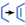

|
|
Main Window — Build Toolbar |
This toolbar contains tools for building and modifying structures in the Workspace.
| Draw Enter Draw mode to draw structures in the Workspace. Each click places an atom and connects it to the previous atom. When you click and hold, a menu is displayed from which you can select an element to use in drawing. The menu lists a number of common elements, and has an Other item for selecting other elements from a periodic table. The default element is carbon. See Drawing Structures for a more detailed description. |
|
 |
Delete Menu equivalent: Edit → Delete → Pick to Delete. This button has a menu from which you can choose the object that you want to delete. The menu has four sections. The first section lists structural units. If you select one of these items, the delete button is indented to indicate that you are selecting to delete atoms or bonds from the structure. The second section lists atom categories that can be deleted, and zero-order bonds. The third section item opens the Atom Selection dialog box for defining which atoms to delete. The fourth section allows you to delete various kinds of markers associated with the structures in the Workspace: labels, measurements, H-bonds, contacts, ribbons, adjustments, and captions. For the second and fourth groups, the deletion takes place when you select the menu item. |
| Set Element Set the element for the atoms that you pick in the Workspace. Displays a menu from which you can select the desired element from a set of common elements. To select some other element, choose Other from the menu, then select the element from the periodic table that is displayed. You can also use the Atom Properties tab in the Build panel to set the element. |
|
|  | + Bond Order When selected, the order of the bonds that you pick is incremented by one for each pick, to a maximum of 3. |
 |
- Bond Order When selected, the order of the bonds that you pick is decremented by one for each pick, to a minimum of 0. Zero-order bonds are displayed with dashed lines (or tube segments). |
| + Formal Chg When selected, the formal charge of the atoms that you pick is incremented by one for each pick. |
|
| - Formal Chg When selected, the formal charge of the atoms that you pick is decremented by one for each pick. |
|
| Move When selected, allows you to move the atom that you pick in the xy plane or the z direction. To move in the xy plane, click the new location. Moves in the z direction are made in 0.5 Å increments when you click on the desired atom. |
|
| R/S When selected, allows you to invert the chirality at an atom or swap the substituents on an aliphatic ring atom by clicking on the atom. Double-click to invert the chirality of all atoms. Does not apply to atoms at the fusion of two rings. |
|
| Clean up Menu equivalent: Edit → Build → Clean Up Geometry. Keyboard shortcut: U Cleans up the geometry of the structure or the selected atoms in the Workspace. Uses the OPLS_2005 force field by default; the universal force field (UFF) can be selected from the button menu or with a preference. See Geometry Cleanup for more information. |
|
| Sculpt Menu equivalent: Edit → Sculpting Mode. Perform "sculpting"—move the selected atoms and run a limited force-field minimization of a region around the moved atoms. The minimization is restarted each time you move an atom. See the Local Transformations topic for more information. |
|